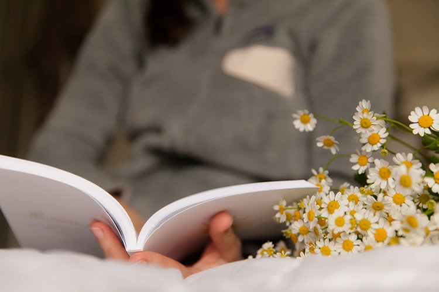

THE POWER OF A MORNING PRAYER ROUTINE
God said He would make each day new. Each day we are given the chance to start over again with new mercies, the ability to reconcile and set our feet toward the light. For me, the best way to do this is by fixing my eyes above each day before I begin to catch the first glimmer of sunbeams through my window. Doing this helps me to adjust my vision and posture toward love, light and gratitude. When we pray, meditate, and reflect on what the Lord wants for us, and when we pray for the desires of our heart, we allow ourselves to be bathed in God’s light and love. When we start our day with focused love, pointed towards Him, we can rest knowing we will be held by an ever-loving and faithful Father as we walk through the unexpected struggles and glorious triumphs each day.
WHY I START MY MORNING WITH PRAYER
Starting my morning with prayer, whether to greet Him or to thank Him, sets the tone and allows me to accomplish tasks and encounter others from a place of love and gratitude. Offering thanks for another day, while fixing my eyes on God, creates a posture of gratitude that helps me focus on loving others well. It also serves to remind me that this is another day for me to lead those in my path toward Him. I am always reminded that our job is to ultimately point others to heaven one moment, one encounter at a time. Offering my day to God before I rise will guide my feet to do His will. While we are free to make choices in our day, the truth is, nothing is in my control and I have discovered that when I point all things back to Jesus, peace beyond understanding comes—even during stressful times. I rest in the Word as my coffee brews, and the sun begins to open her eyes to the day and to His glory. I set my heart and eyes on the words God wants to breathe into my heart and my day. “Your word is a lamp for my feet, a light for my path” (Psalm 119:105) When I pray over the Word, I hear God whisper to me words of love, truth, understanding, grace, and new mercies.

A GLIMPSE OF MY MORNING PRAYER ROUTINE
Before I start my day, whether it’s before the alarm goes off or right after, I always start by thanking God for giving me another day. Then, I pray the Angelus in the morning (I also pray this at noon and 6pm - and I give myself grace if my time is off a bit.) I pray for my actions and choices to be placed in the hands of God — trying to look at others with the eyes of Jesus. If I am having a difficult time with someone, I often pray for that person with this simple prayer, “Please help me to see this person as you do, Jesus.” If I am working through a specific thing that I cannot make a decision on, I pray through a surrender novena. Read, Write and Reflect Once I start my day and have my coffee, I pull out my Bible and a journal, such as my lovely Live Today Well journals. I choose a verse from Sacred Scripture. If I am not working on another specific Bible study, I will I reflect on the Psalms. If I am not attending daily mass, I will read the Gospel of the Day. Often, I write down the verse as I find writing the words reinforces them in my mind and makes it easier for me to recall them throughout the day or in the future as needed. Often, I have my kids recite those verses with me. Then I reflect how I feel God is speaking to me through the Word. If there is a saint celebrating a feast day, I will note that on my journal and what I know about the saint and/or what I learned about them on this day.
PRACTICAL TIPS FOR CREATING YOUR OWN MORNING PRAYER ROUTINE
While this is my morning routine for prayers, it has taken me a number of years to fall into this routine. Also, certain seasons of my life did not allow this type of routine to thrive. When my babies were little, my prayer routine were more likely occurring throughout the day. If you are looking to start a routine or enhance your current morning prayer routine, here are a few tips to help you begin! 1. Start by writing down what areas you would like to address. Do you want to pray more, read scripture more or is there some other area you long to be intentional about? Put these thoughts in a journal so you can come back to them. 2. Pick one area where you want to start. For example, you could start with a small prayer in bed. You could either pray a simple prayer you come up like “Thank you, God, for another day. Help me to fix my eyes on you.” Alternatively, you could pray a more formal prayer like the traditional morning offering prayer. “O Jesus, through the Immaculate Heart of Mary, I offer you my prayers, works, joys, and sufferings of this day for all the intentions of your Sacred Heart, in union with the Holy Sacrifice of the Mass throughout the world, for the salvation of souls, the reparation of sins, the reunion of all Christians, and in particular for the intentions of the Holy Father this month. Amen.” 3. Pick one Bible verse or chapter to read and journal. I like to start with Psalms. 4. Pick a saint each month to learn about and share with your family. 5. Remember to start small. Give yourself grace. God just wants to be close to you, so whatever disciplined prayer time you offer is a gift to Him. 6. And just know, I will be praying for you too. In the end, however you choose to fix your eyes and hearts on heaven, I encourage you to start your day with prayer. You will begin to see a peace that comes over you, a peace that is beyond understanding.
Meet Heather Lebano
Heather lives near Philadelphia with her husband of 22 years where they are raising their four children and two dogs. While Heather has been running the house, she has kept busy dreaming up creative businesses over the years. A big dream was realized this past summer when she started her blog, House of Love and Laughter, where she writes about her deep faith, the gift of raising her family, and sometimes reflects on the struggles of life with a child who lost her hearing over a 10 year journey. She loves being by the water, gardening, setting a place at her table for others, walking and drinking coffee while keeping eyes fixed above. You can find Heather on Instagram @houseofloveandlaughterblog.